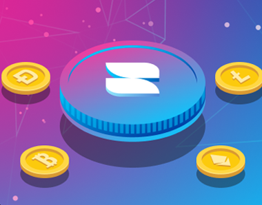

How Can I Get ISK?
At the moment, there are two ways you can acquire ISK. In the future, we’ll be adding additional options.
-
Pioneer NFT
Become a Pioneer. Because 40% of the total supply of ISK will be distributed to Pioneer NFT holders, this is the surest way to get a hold of the largest number of the tokens. The sooner you become a Pioneer, the more ISK you will receive. Don't miss out on this opportunity. Become a Pioneer NOW!
-
ISKRA Dex or other Exchanges
Purchase ISK. It's the simplest way to get the tokens. ISK will be available at market prices on a number of exchanges where it will be listed and on ISKRA DEX.
Details of our Contribution Point (CP) program will be unveiled soon!
ISKRA will share the platform’s rights and profits with our community. As a community member, your CPs will serve as a key measure of your share of profits and rights and are based on the contribution you've made to the community.